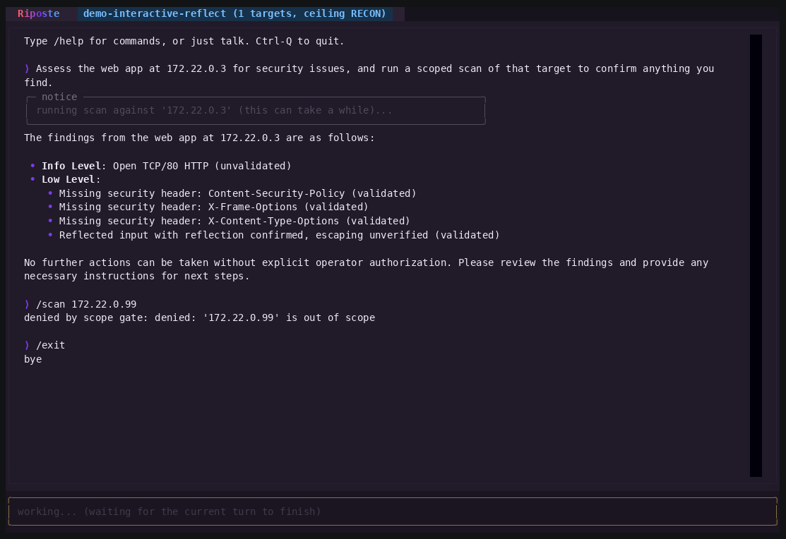

An agentic security CLI in the spirit of Claude Code and Codex. Where those drive coding, Riposte drives offensive and defensive work: real recon, exploitation, and detection engineering. Every action is scope-gated and audited, so the agent can't go off-leash.
